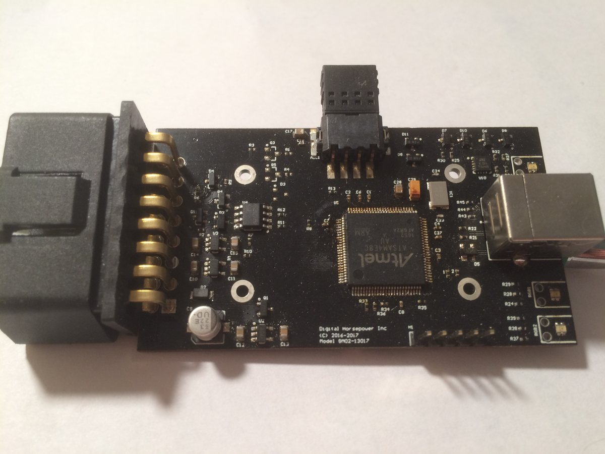

Products / Kepler Interface

Vehicle interface · open hardware
A low-cost automotive vehicle interface built to do two jobs well: act as a standards-based J2534 pass-thru for programming, and serve as a standalone diagnostic and data-logging tool for the bench or the car.
Kepler speaks the SAE J2534 pass-thru standard, so it works with software that expects a standards-based interface — including using a manufacturer's own programming tools rather than locking you into one vendor's ecosystem. That makes it a practical, affordable way to handle ECU programming on GM vehicles without a dealer-only box.
Beyond programming, Kepler is built to work on its own. With three CAN channels, GM VPW, analog inputs, Bluetooth LE, and onboard microSD storage, it can sniff buses, capture live data, and log to a card or stream to a phone or PC — useful for chasing intermittent faults and keeping an older vehicle healthy.
Kepler started as an open-source design released to the community — the board files, firmware, and a J2534 driver are public. You can build your own, or get a finished board from us. Either way, it's a low-cost path to a capable interface.